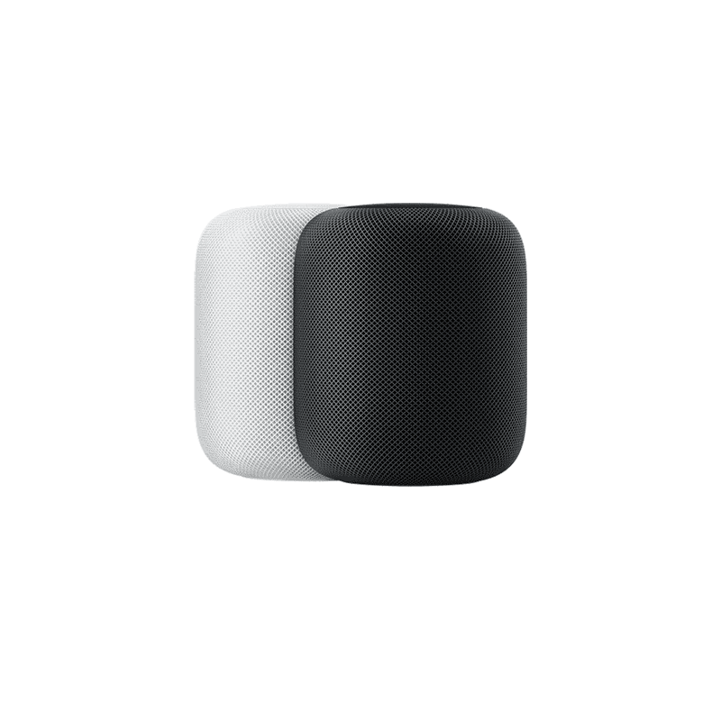
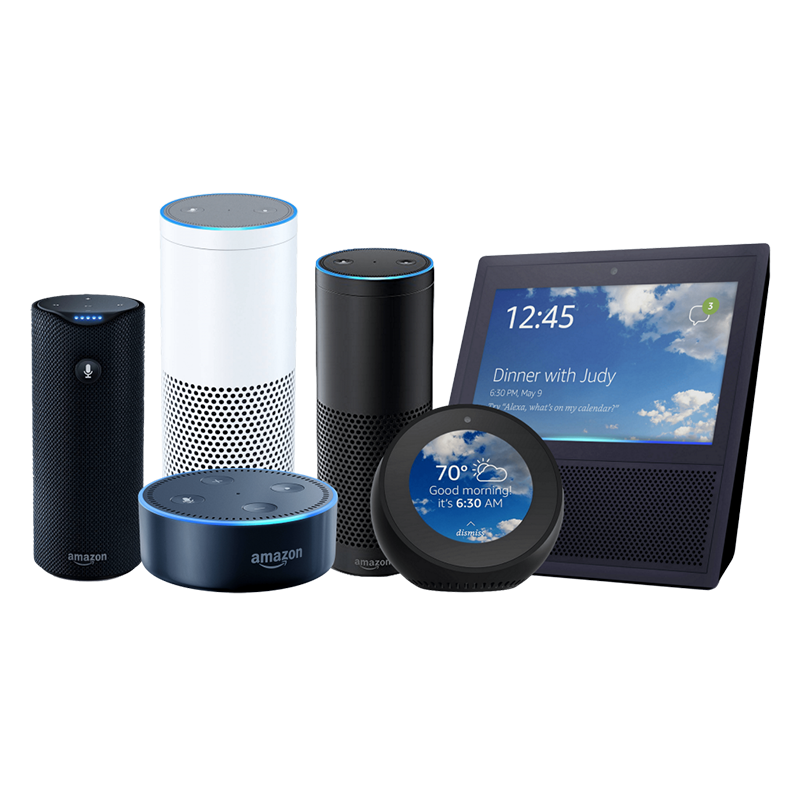
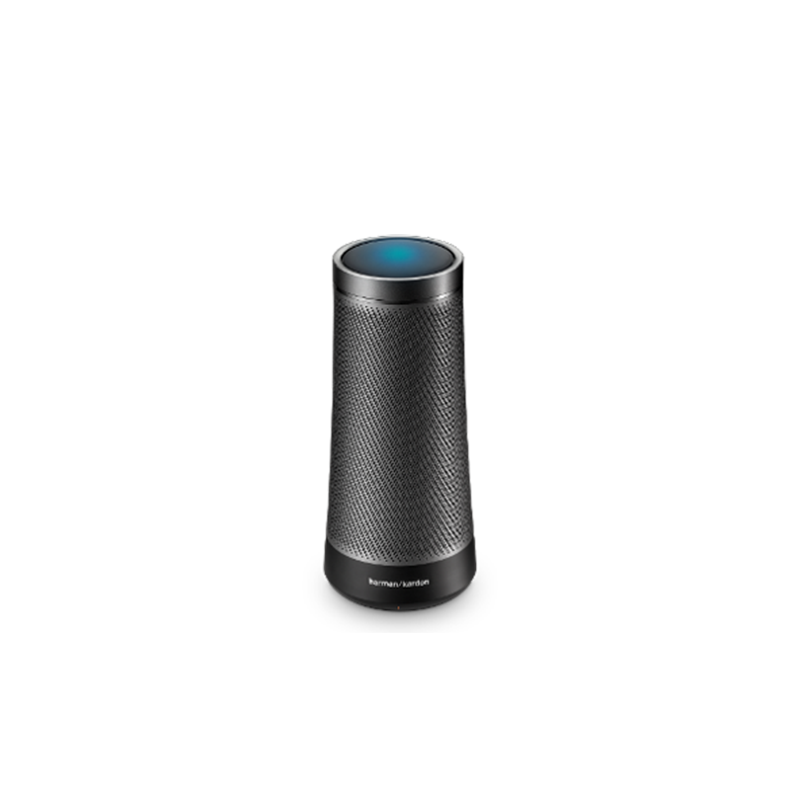
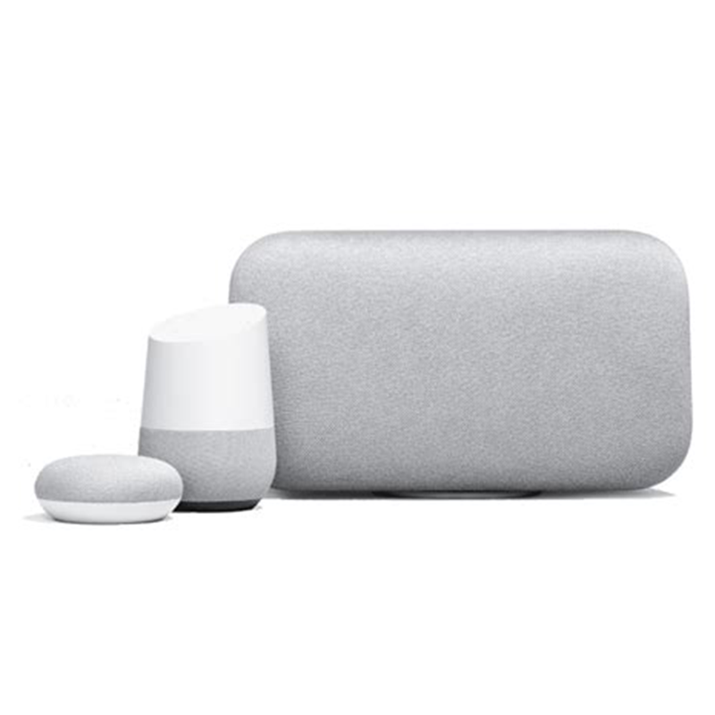

Siri, Alexa, Cortana, and Google are household names: these are the AI that are increasingly entering electronics consumers' lives as smart speakers produced by some of the biggest tech companies in the world: Apple, Amazon, Microsoft and Google have invited themselves into the living rooms, bedrooms, and kitchens of millions of people all over the world.
According to a report by NPR and Edison Research in spring of 2018, 18% of Americans, or 43 million people, own a smart speaker. These users fall into the "first adopters" or "early mainstream" categories of consumers for smart audio products, and this category of products is only expected to expand in the coming years.
Smart speakers and ubiquitous conversational agents



